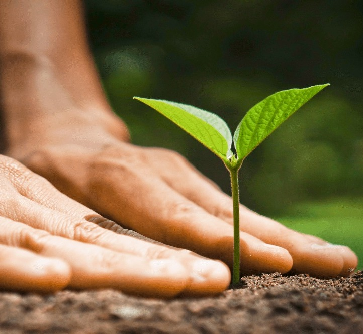
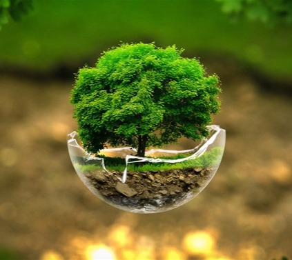

GoEatGreen es un emprendimiento que busca ser líderes en la promoción de un estilo de vida consciente y sostenible, impulsando el cambio hacia una sociedad vegana, donde la compasión hacia los animales, la salud humana y la preservación del medio ambiente sean prioridad.


Nuestra misión es ofrecer productos veganos de alta calidad, deliciosos y nutritivos, que satisfagan las necesidades y los deseos de nuestros clientes. Nos esforzamos por educar, inspirar y fomentar una alimentación basada en plantas, promoviendo así la salud, el bienestar animal y la sostenibilidad ambiental.